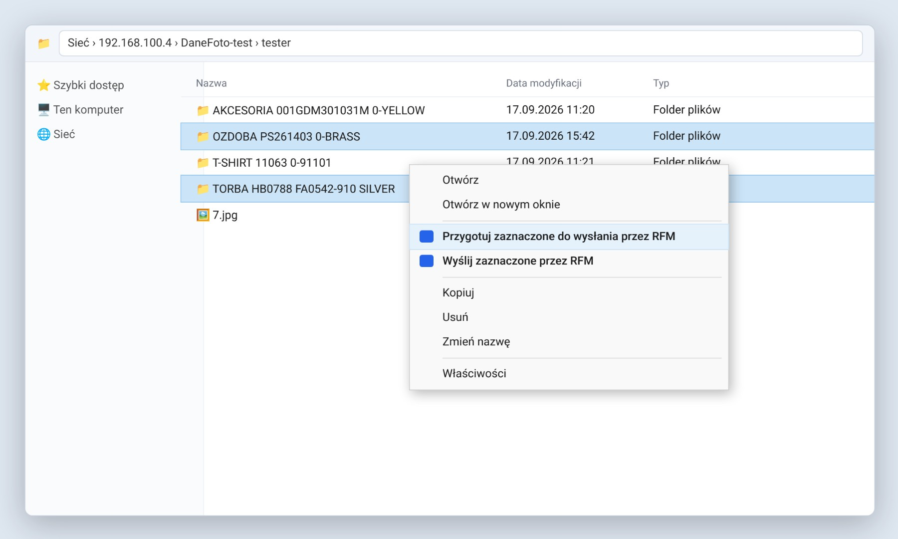
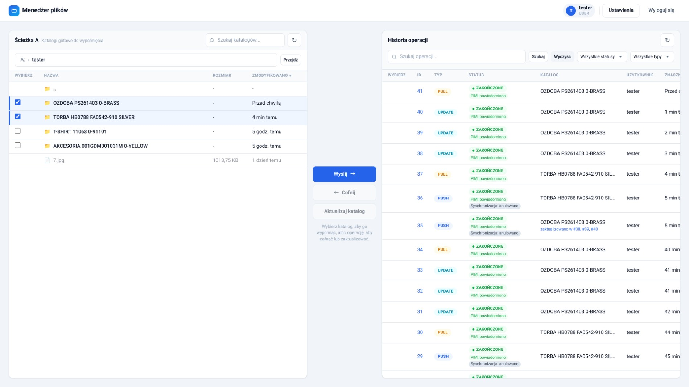
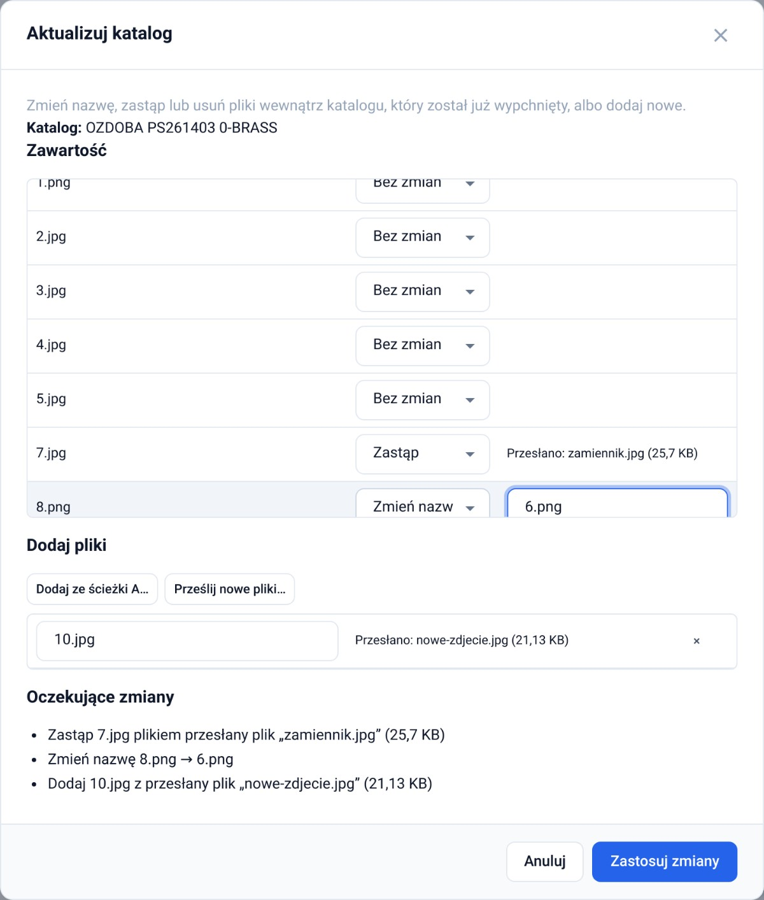
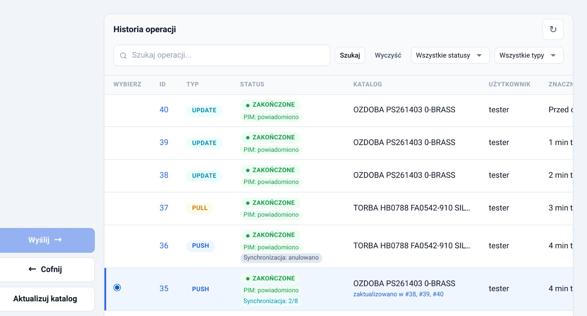

Wysyła gotowy katalog zdjęć. Katalog znika ze Ścieżki A.
Poprawia pliki w katalogu, który już wysłano.
Zabiera wysłany katalog z powrotem do Ścieżki A.
TORBA HB0788 FA0542-910 SILVER.1.jpg, 2.png ✓ okladka.jpg ✗Jeśli coś się nie zgadza, pojawi się okno „Nie można kontynuować” z powodem. Nic nie zostanie zmienione – popraw i spróbuj ponownie.
Otwórz adres Menedżera plików (środowisko testowe: https://dev.ff.vitkac.local), wpisz login i hasło, wybierz metodę: PolkaSQL (konto z PolkaSQL) albo Lokalna (konto założone w Menedżerze plików) → Zaloguj się. „Zapamiętaj mnie” = nie wylogowuje po zamknięciu przeglądarki.
Sposób A – z Eksploratora Windows (gdy masz zainstalowany dodatek RFM):
Sposób B – w aplikacji: przejdź do folderu (kliknij nazwę lub wpisz ścieżkę, np. A:/tester) i zaznacz pole wyboru przy katalogu.
Potem: kliknij Wyślij →, przeczytaj okno i kliknij Potwierdź.


| Chcę… | Kliknij |
|---|---|
| zmienić nazwę | przy pliku Zmień nazwę → wpisz np. 8.jpg |
| usunąć plik | przy pliku Usuń |
| podmienić zdjęcie | przy pliku Zastąp → Ze ścieżki A… lub Prześlij… (z komputera). Ten sam format: jpg za jpg. |
| dodać zdjęcie | Dodaj ze ścieżki A… lub Prześlij nowe pliki… → w polu nazwy wpisz numer, np. 10.jpg |


| Problem | Co zrobić |
|---|---|
| „Wyślij” jest szary | Zaznacz pole wyboru przy folderze (plików nie da się zaznaczyć). |
| Brak kółka wyboru w historii | Wybrać można tylko PUSH ze statusem Zakończone, który nie był jeszcze cofnięty. |
| „Nie można kontynuować” | Przeczytaj powód w oknie i popraw katalog według 4 zasad z pierwszej strony. |
| Brak pozycji RFM w menu Windows | Zaznacz tylko foldery; w Windows 11 kliknij „Pokaż więcej opcji”; folder musi leżeć w folderze sieciowym ze zdjęciami. |
| „PIM: błąd” lub długo „PIM: ponawianie” | Kliknij numer operacji (ID) → Wyślij ponownie do PIM. |
| Nie widzę okna potwierdzenia | Wyłączono je opcją „Nie pytaj ponownie”. Włączysz je w Ustawienia → Potwierdzenia. |
Zgłaszając problem administratorowi, podaj numer operacji (ID), nazwę katalogu i treść komunikatu.